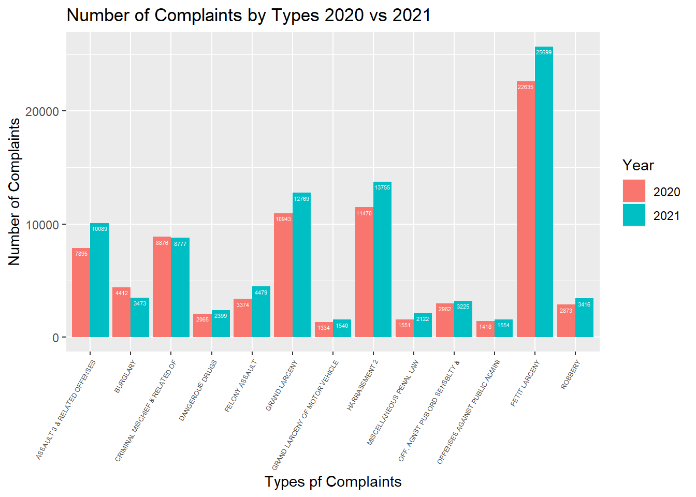

Compare 2020 vs 2021
Number of Complaints in Manhattan 2020 vs 2021
complaint_plot = read_csv("./data/nypd_complaint_two_year_data.csv") %>%
group_by(month,year) %>%
summarize(obs = n()) %>%
ggplot(aes(x = month, y = obs, group = year, color = as.factor(year))) +
geom_point() +
geom_line() +
labs(x = "Month", y = "Number of Complaints in Manhattan", col = "Year") +
ggtitle("Number of Complaints in Manhattan 2020 vs 2021") +
theme(axis.text.x = element_text(angle = 60, vjust = 0.2, hjust = 0.5)) +
scale_x_continuous(
breaks = c(1,2,3,4,5,6,7,8,9,10,11,12),
labels = c("Jan","Feb","Mar","Apr","May","Jun","Jul","Aug","Sep","Oct","Nov","Dec")) +
viridis::scale_color_viridis(discrete = T)
complaint_plot 
From the plot, we can see that the number of complaints in Manhattan in most months of 2021 is more than in 2020, except for January and February. That’s probably due to the affect of COVID-19 home isolation policy. When COVID-19 broke out at the beginning of 2020, everything in the society was locked down and people had to stay at home. Crime decreased as the number of people in social activities declined, thus the number of complaints in 2020 is less than that in 2021.
Number of Complaints by Types 2020 vs 2021
NYPD had classified main complaints types into: PETIT LARCENY, HARRASSMENT, GRAND LARCENY, ASSAULT 3 & RELATED OFFENSES, CRIMINAL MISCHIEF & RELATED OF, FELONY ASSAULT, BURGLARY, ROBBERY, OFF. AGNST PUB ORD SENSBLTY &, DANGEROUS DRUGS, MISCELLANEOUS PENAL LAW, OFFENSES AGAINST PUBLIC ADMINI, GRAND LARCENY OF MOTOR VEHICLE. We consider the number of complaints over 1000 in both years as an effective type of complaint in our comparation.
complaint_type_plot = read_csv("./data/nypd_complaint_two_year_data.csv") %>%
group_by(ofns_desc, year) %>%
summarise(obs = n()) %>%
filter(obs > 1000) %>%
filter(ofns_desc != "SEX CRIMES") %>%
filter(ofns_desc != "VEHICLE AND TRAFFIC LAWS") %>%
arrange(desc(obs)) %>%
ggplot(aes(x = ofns_desc, y = obs, fill = as.factor(year))) +
geom_bar(stat = "identity",position=position_dodge()) +
geom_text(aes(label=obs), vjust=1.6, color="white",
position = position_dodge(0.9), size=1.5) +
xlab("Types pf Complaints") + ylab("Number of Complaints") +
ggtitle("Number of Complaints by Types 2020 vs 2021") +
theme(axis.text.x = element_text(angle = 60, vjust = 1, hjust = 1, size = 5)) +
scale_fill_discrete(name = "Year")+
viridis::scale_color_viridis(discrete = T)
complaint_type_plot
From the plot, we can clearly see that the number of complaints in
2021 for almost all types is larger than it in 2020.
To better compare the proportion of different types of complaints in
2020 and 2021, we continuously make pie plots below.
Types of Complaints 2020 vs 2021
type_pie_2020 = read_csv("./data/nypd_complaint_2020_data.csv") %>%
group_by(ofns_desc) %>%
summarise(obs = n()) %>%
filter(obs > 1000) %>%
arrange(desc(obs)) %>%
mutate(prop = round(obs/sum(obs)*100,2)) %>%
ggplot(aes(x = "", y = prop, fill = ofns_desc)) +
geom_bar(stat = "identity",width=1, color = "white") +
coord_polar("y", start=0) +
geom_text(aes(label = paste0(prop, "%")), position = position_stack(vjust=0.5), size = 2) +
labs(x = NULL, y = NULL, title = "2020") +
theme(legend.title = element_text(size=10),legend.key.size = unit(0.5, 'cm'))+
theme(plot.margin = margin(0.1,0.1,0.1,0.1, "cm"))+
scale_fill_discrete(name = "Complaint Type") +
viridis::scale_color_viridis(discrete = F)
type_pie_2021 = read_csv("./data/nypd_complaint_2021_data.csv") %>%
group_by(ofns_desc) %>%
summarise(obs = n()) %>%
filter(obs > 1000) %>%
arrange(desc(obs)) %>%
filter(ofns_desc != "SEX CRIMES") %>%
filter(ofns_desc != "VEHICLE AND TRAFFIC LAWS") %>%
mutate(prop = round(obs/sum(obs)*100,2)) %>%
ggplot(aes(x = "", y = prop, fill = ofns_desc)) +
geom_bar(stat = "identity",width=1, color = "white") +
theme(legend.title = element_text(size=10),legend.key.size = unit(0.5, 'cm'))+
theme(plot.margin = margin(0.1,0.1,0.1,0.1, "cm"))+
coord_polar("y", start=0) +
geom_text(aes(label = paste0(prop, "%")), position = position_stack(vjust=0.5), size = 2) +
labs(x = NULL, y = NULL, title = "2021", fill = "Complaint Type" ) +
viridis::scale_color_viridis(discrete = F)
par(mfrow = c(2,1))
type_pie_2020type_pie_2021
From the pie plots above, we can see the proportion of each type of complaint didn’t change a lot from 2020 to 2021. Petit larceny, harrassment and grand larceny are three main types of complaints in both two years.
Complaint Locations in Manhattan 2020 vs 2021
The following plot is a side by side comparison of monthly complaints in Manhattan in 2020 and 2021. Since there were only one complaint in too many different locations, this data is not analyzable. We took 10 complaints and above as the effective number of complaints and got the following figure.
complaint_data = read_csv("./data/nypd_complaint_two_year_data.csv") %>%
mutate(month = as.integer(month)) %>%
as_tibble(map_data("state"))
complaint_month_2020 = read_csv("./data/nypd_complaint_2020_data.csv") %>%
mutate(month = as.integer(month)) %>%
group_by(month, latitude, longitude) %>%
summarise(obs = n()) %>%
filter(obs >= 10)
complaint_month_2021 = read_csv("./data/nypd_complaint_2021_data.csv") %>%
mutate(month = as.integer(month)) %>%
group_by(month, latitude, longitude) %>%
summarise(obs = n()) %>%
filter(obs >= 10)
map_2020 =
ggplot() +
geom_point(data = complaint_month_2020, aes(x = longitude, y = latitude, size = 0.01, color = obs), alpha = 0.5) +
scale_size(range = c(1,8)) +
transition_time(month) +
labs(
title = "2020 Month: {frame_time}",
color = "Complaints",
x = "Longitude",
y = "Latitude") +
enter_grow() +
exit_shrink() +
ease_aes("sine-in-out") +
coord_cartesian(ylim = c(40.68, 40.87), xlim = c(-74.02, -73.925)) +
viridis::scale_color_viridis()
map_2021 =
ggplot() +
geom_point(data = complaint_month_2021, aes(x = longitude, y = latitude, size = 0.01, color = obs), alpha = 0.5) +
scale_size(range = c(1,8)) +
transition_time(month) +
labs(
title = "2021 Month: {frame_time}",
color = "complaints",
x = "Longitude",
y = "Latitude") +
theme(legend.position = "none") +
enter_grow() +
exit_shrink() +
ease_aes("sine-in-out") +
coord_cartesian(ylim = c(40.68, 40.87), xlim = c(-74.02, -73.925)) +
viridis::scale_color_viridis()
map_gif_2020 = image_read(animate(map_2020, duration = 12, fps = 1, width = 400, height = 400))
map_gif_2021 = image_read(animate(map_2021, duration = 12, fps = 1, width = 400, height = 400))
new_month_gif = image_append(c(map_gif_2020[1], map_gif_2021[1]))
for (i in 2:12) {
combined_month = image_append(c(map_gif_2020[i], map_gif_2021[i]))
new_month_gif = c(new_month_gif, combined_month)
}
new_month_gif
The scatterplots show how complaints were distributed in Manhattan comparing 2020 with 2021. Overall, the complaint density of 2021 is larger than it in the 2020, especially in April, May and June. The lighter color represents more complaints happened in the same location, and we can find that most complaints repeated in the upper city. From the dynamic plots, we found that there is an area in the middle of the image that is almost always blank, and that’s where the central park is.